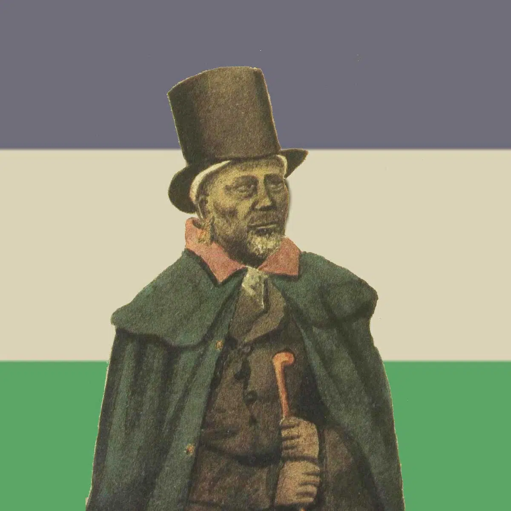

This website is all about sharing the beauty of Basotho culture. Here you’ll find traditional clothing, music, dance, crafts, and festivals that make Lesotho unique. It’s a space to learn, enjoy, and celebrate the heritage of the Basotho people.
Moshoeshoe I was the first king of Lesotho. He was the first son of Mokhachane, a minor chief of the Bamokoteli lineage, a branch of the Bakoena (crocodile) clan. In his youth, he helped his father gain power over some other smaller clans. In 1820, at the age of 34, Moshoeshoe succeeded his father as the Bamokoteli chief and formed his own clan. He and his followers settled at the Butha-Buthe Mountain. He became the first and ultimately longest-serving King of Lesotho in 1822.
